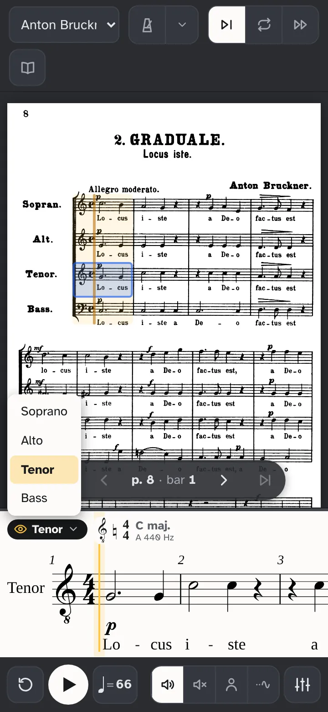
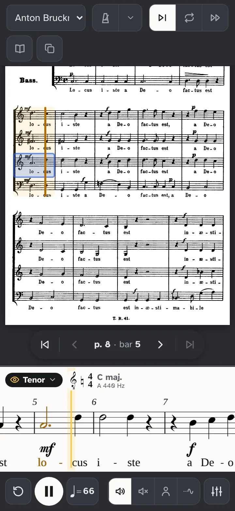
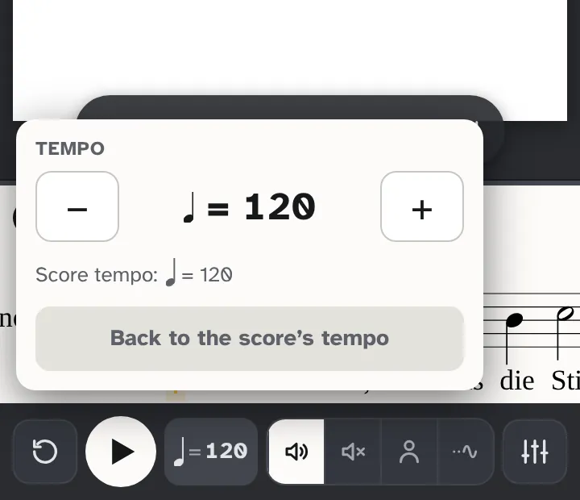
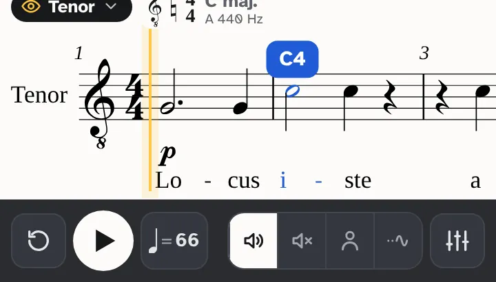
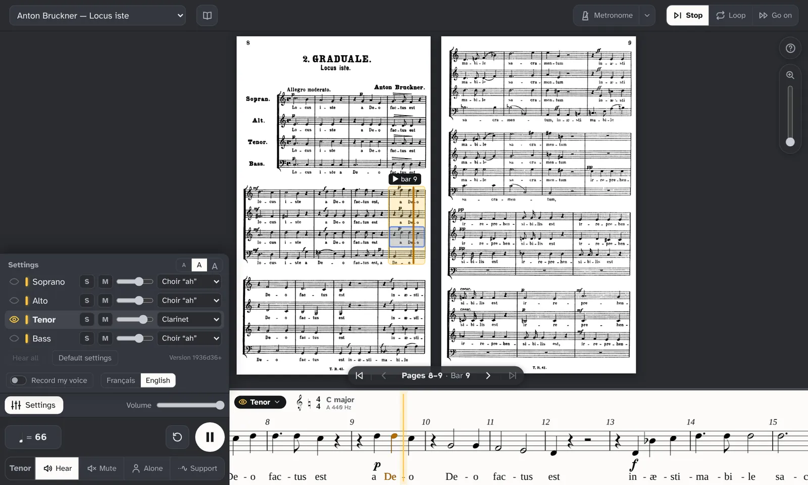
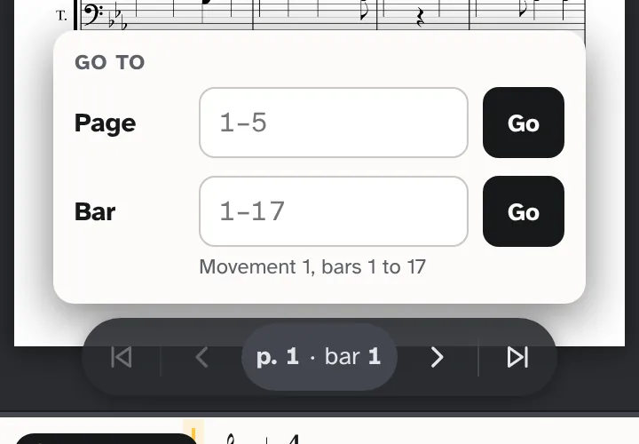
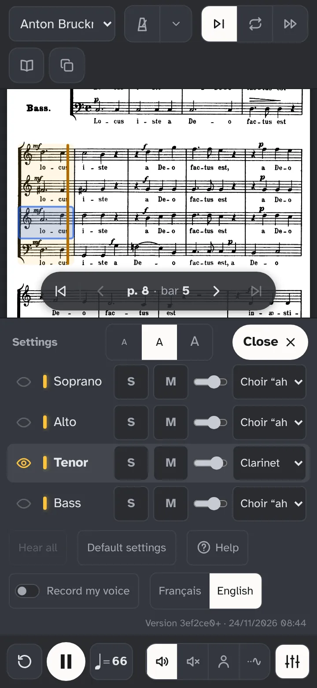
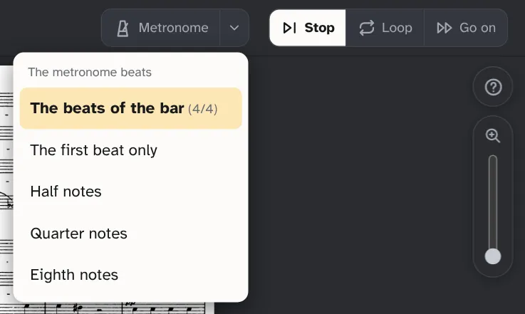
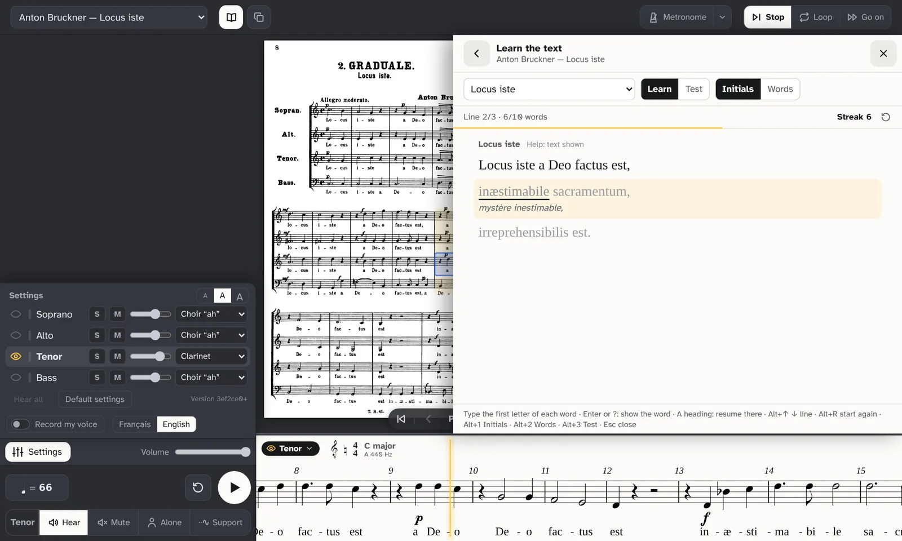
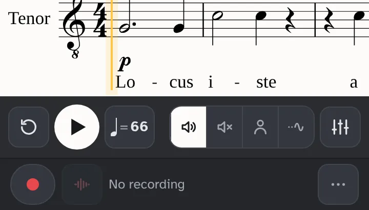

The essentials, in 6 steps
These six steps show the essentials of Pupitre Ouvert. The other features are described further down, by topic.
-
The first time, choose your voice
Pupitre Ouvert opens on an example work, Bruckner’s Locus iste. At the top of the bottom line, touch the name of the voice followed, Tenor to begin with, and choose yours. That is the voice Pupitre Ouvert will follow and bring forward, in all your scores.
To work on your own score, add it: see Your scores.

-
Listen to everything, following your line
Touch , or a bar on the page: the music starts from there.
At the top, the full score: these are the pages of your paper score, scanned as they are, with any handwritten markings. Its page numbers are those of the paper: the page 12 the conductor mentions is page 12 in Pupitre Ouvert. It follows the music; the bar being played lights up, and your staff is in blue.
At the bottom, the line of my voice shows your part alone, large, with the text. It scrolls under a fixed mark and the note being sung lights up in orange. This line, and the music you hear, come from a digital transcription of the score (in MusicXML format): a wrong note may have slipped in. When in doubt, the paper score is right (see Your scores to have the archive corrected).
Your voice sounds as a clarinet, in front of the other voices on a choir “ah” and the piano: it stands out without covering the harmony.

-
Your voice alone: “Alone”
In the bottom bar, My voice has four modes. Touch Alone: you now hear only your part.
Too fast? Touch the tempo ♩ = 120 then − to slow down. plays the previous bar again with your voice alone, then the music goes on.

-
Everything but your voice: “Mute”
Touch Mute: the whole choir plays, except your voice. The bottom line keeps scrolling.
Between the two, Support sounds only the second half of each note of your voice: the note comes in after its start. Hear brings everything back.
On a phone, these four buttons show only their icon: they are at the bottom, between the tempo and .
Heareverything, your voice in frontAloneyour voice onlySupporteach note, from its second halfMuteeverything but your voice -
Hear a note
Not sure of a note? Press and hold it in the bottom line: the music pauses, the note sounds for as long as you hold it and its name is shown (here B♭4). When you let go, the music resumes where it was.
A short touch only plays the note.

-
Install Pupitre Ouvert on your phone
Added to the home screen, Pupitre Ouvert opens like an app: full screen, in one touch, and without a network. Nothing is downloaded from an app store: the browser does it.
Android (Chrome)
- Open Pupitre Ouvert in Chrome.
- Touch the menu ⋮ at the top right.
- Choose “Add to Home screen” (or “Install app”).
iPhone (Safari)
- Open Pupitre Ouvert in Safari.
- Touch the Share button (the square with an arrow pointing up).
- Choose “Add to Home Screen”.
Your scores
Pupitre Ouvert comes with two examples. The other scores are yours to bring: one .zip archive per work.
Add a score
- Touch the list of works, at the top left.
- Choose Add a score (.zip)… and pick the file.
- The work opens, and stays in the list: no need to load it again next time, even without a network.
Get the archive of your score
The archive brings together the scanned pages of your score and their transcription. An artificial intelligence that can run code (Claude, ChatGPT…) can make it from your PDF or your photos, following the method published with Pupitre Ouvert.
- Where is it kept? In the browser of this device, and nowhere else. On another device, or in another browser, add it again. Keep your .zip file: clearing the site’s data, or uninstalling the app, removes your scores too.
- A corrected version: add the new archive, it replaces the old one.
- Manage your scores: in the list of works, Manage my scores… shows what this device keeps. There you open a work, add one, or remove one you added: its recordings and the progress in its text are erased with it.
- The examples are part of the app: you hide them in the same place, on this device, and show them again whenever you like.
- The archive is refused? Pupitre Ouvert says what is missing: pass the message on to whoever, or whichever AI, made it.
The screen at a glance
Everything is on one screen, with no menu. Each letter refers to the legend.
- A
- Work: the score that is open; choose another.
- B
- Metronome and end of the movement: stop, loop or go on.
- C
- Work notes: the text, its translation, “Learn the text”.
- D
- Movements: touch one to open it.
- E
- The page: touch a bar to play from there; swipe to turn the page, pinch to zoom.
- F
- Navigator: page and bar; touch the middle to go to a bar.
- G
- Voice followed: touch to follow another voice. Next to it: the clef, the key signature, the time signature, the key, and the pitch of the sounds (A 440 Hz).
- H
- Line of my voice: your part alone, with the text; touch a note to hear it.
- I
- hear again, play and pause, ♩ = 120 the tempo.
- J
- My voice: Hear, Mute, Alone, Support.
- K
- Settings: each voice and the piano (follow, solo, mute, volume, instrument), the display, the language, and the help.

Phone turned on its side: the bottom bar offers Line, Page or Both, to show the line of my voice alone, the page alone, or the two side by side.
All the features
By topic, to find quickly what you are looking for.
Moving around the score
- A bar on the page: touching it starts the music from that bar.
- Turning pages: swipe the page, or in the navigator. While the music plays, the page follows by itself.
- Going to a bar: touch the middle of the navigator (“p. 1 · bar 6”), then type a page number (that of the paper score) or a bar number. The music goes there without stopping.
- goes back to the start of the movement (already at the start: to the previous movement); goes to the next movement.
- Zooming: pinch the page with two fingers, then move it with one. On a computer: the slider to the right of the pages, or Ctrl + wheel where the mouse points; the enlarged page moves by dragging. “Whole page” returns to the normal size.
- Entry of your voice: during a long rest, the header of the line announces “Entry at bar 17 (in 3 bars)”. Touching it takes the music one bar before.

My voice: the four modes
| Mode | What you hear |
|---|---|
| Hear | The whole choir, your voice in front. |
| Mute | Everything, except your voice. |
| Alone | Your voice only. |
| Support | Each note of your voice, from its second half only. |
On a phone, only the icons are shown.
Advanced settings: each voice, the sounds, the display
On a phone, the button (bottom right) opens them. On a computer, they are unfolded at the bottom left, above the controls; Settings folds them away. One row per voice, and one for the piano:
- chooses the voice followed, the one of the bottom line. The piano can be followed too.
- S (solo): hear only this voice. Several solos are possible: your voice + the piano, your voice + the alto…
- M (mute): silence this voice.
- The slider sets the volume; a light comes on when the voice sings. On a computer, Volume, next to Settings, sets the whole.
- The instrument of each voice (see below).
- Hear all removes the solos and mutes; Default settings also resets the instruments, the volumes, the tempo and the display.
- A A A: the size of the bottom line. Lyrics: which text to show, when the work has several.
- Français / English: the language of the app.
- On a phone, this is also where the Help is.

The instruments
- Clarinet
- Clear and round, it stands out from the choir: the voice followed, by default.
- Choir “ah”
- Voices on “ah”: the other voices, by default.
- Note names
- A voice sings the name of each note (do, re, mi…) at its pitch.
- Marimba
- Each note struck, then fading: you hear exactly where it starts.
- Strings
- A soft, sustained sound.
- Piano
- The accompaniment, by default; possible for a voice too.
The settings are kept per voice and per device. Following another voice turns it into a clarinet and puts the others back on “ah”.
Slower or faster
- The tempo in the bottom bar ♩ = 120 is that of the place being played. It takes a colour when it is no longer the score’s.
- Touch it: − and + by metronome steps, from 40% to 200% of the written tempo.
- “Back to the score’s tempo” cancels the change. If the score changes tempo, the chosen difference is kept.
- Hear again: plays again from the start of the previous bar with your voice alone, then the music goes on as usual.
Metronome and end of the movement
- Metronome (at the top): the button turns it on or off. The arrow chooses what it beats: the beats of the bar, the first beat only, half notes, quarter notes or eighth notes.
- At the end of the movement: Stop, Loop (play it again from the start) or Go on (move to the next one). On a phone, these are the three icons; a bubble confirms the choice.

The text: the work notes and “Learn the text”
The button , to the left of the movements, opens the work notes: for each movement, the tempo, the key, the sung text and its translation. The music goes on meanwhile. “Play this movement” opens it and plays it.

Learn the text (at the top of the work notes) has you recall the text from memory, on the keyboard, in order:
- Initials: type the first letter of each word. Words: type the whole word.
- Learn: a level of help per movement, from “text visible” to “none”. It decreases when you succeed and comes back when you stumble.
- Test: everything is hidden; a score (accuracy, mistakes, time) and the words to go over again.
- Accents, capitals and punctuation do not count. Enter or “?” shows the word that escapes you.
- Touching the title of a movement resumes there; starts again from the beginning.
Record my voice
Experimental feature. Depending on the phone, the microphone and the headphones, the recorded sound may be of poor quality, or slightly out of step with the music.
To hear yourself sing with the music. Turn it on in the Settings: “Record my voice”. While it is off, the microphone is never asked for.
- starts the music and records. Anything that stops or moves the music stops the recording and keeps it.
- One take per movement: the new one replaces the old. It stays on the device.
- “My recorded voice” is heard again with the music, like one more voice, in every mode.
- At the same tempo only: at another tempo it is silent (touching it restores the tempo of the recording).
- The menu : volume, choice of microphone, offset (if your voice is behind the music), export or import a .wav file, delete.

Headphones, locked screen, notification
- The play / pause button of the headphones (wired or Bluetooth) stops and restarts Pupitre Ouvert, like a music app.
- “Next” and “previous” (often a double or triple press): next movement, start of the movement.
- The notification and the locked screen show the movement and a progress bar; dragging it moves the music.
- The screen stays on during the rehearsal.
- On an iPhone, Pupitre Ouvert sounds even when the switch is on “silent”.
On a computer: the keyboard
| Space | Play / pause |
|---|---|
| ← → | Previous / next bar |
| Page Up Page Down | Turn the pages |
| Home | Start of the movement |
| R | Hear again |
| Esc | Close the work notes or a window |
In “Learn the text”: Alt+1 Initials, Alt+2 Words, Alt+3 Learn or Test, Alt+↑ ↓ previous or next line, Alt+R start again.
Offline and updates
- Without a network: once opened, Pupitre Ouvert works offline. An instrument is kept after it has been heard once: try them once while you have a network.
- Updates: they arrive by themselves, at the next launch. The installed version is written at the bottom of the Settings.
- To install it on the home screen: step 6 of “The essentials”.
Frequent questions
I hear nothing.
Check the phone’s volume, then in the Settings that no voice is muted or soloed by mistake: Hear all brings everyone back. At the very first launch, the sounds take a few seconds to load.
With my Bluetooth headphones, the sound is late.
Bluetooth always adds a delay. The display takes into account the one the phone reports: the note lit up follows what you hear. To sing along with the music, wired headphones or the phone’s speaker give the least delay. For a recording, the “Offset” setting of the menu realigns your voice.
How do I follow another voice, or the piano?
Touch the name of the voice followed at the top of the bottom line, or the of another voice, in the Settings.
I have changed too many settings.
At the bottom of the Settings, Default settings (confirm with a second touch) puts everything back as on the first day, except the voice followed.
Do I have the latest version?
The version is written at the bottom of the Settings, with its date. Pupitre Ouvert updates itself: close it and open it again to get the most recent one.
How do I work on my own score?
By adding it as a .zip archive: see Your scores. The pictures of this help show the example works, in old editions, in the public domain.
A note played does not match my score.
The music comes from the transcription held in the archive, and a mistake may have slipped in: the paper score is right. Note the movement, the bar and the voice, and have the archive corrected by whoever, or whichever AI, made it; the new archive replaces the old one (Your scores).
I have found a bug.
Please report it (Write to us); a screenshot and the version number, at the bottom of the Settings, help a lot.
Copyright
An old work is free, but its edition (the engraving of the pages, the piano reduction, a translation) is often protected. Pupitre Ouvert is made so that this stays simple:
- Your scores stay on your device: the archive you add is sent to no one, neither to this site nor anywhere else.
- An archive holds the images of your score: it is made for your personal use, to rehearse your part. Do not pass it around if the edition is protected.
- The example works and the pictures of this help are in the public domain: Bruckner’s Locus iste (first edition, 1886) and the Kyrie of Schubert’s Mass in G (Novello edition), from their scans.
Your data
- No account, no advertising, no audience measurement. Pupitre Ouvert collects nothing about you.
- What is downloaded: only from the site of Pupitre Ouvert (hosted by GitHub Pages): the app, the example work, the sounds of the instruments. No other site is contacted. As with any site, the host sees these downloads (your IP address).
- What stays on the device: your settings, the scores you have added, your progress in “Learn the text” and your recordings. None of it is sent. Clearing the site’s data in the browser, or removing the app, deletes them.
- The microphone is used only for “Record my voice”, if you turn it on, and only during a recording.
- Nothing is installed from elsewhere: installing on the home screen is a feature of the browser, and the updates come from the same site.
Author and licences
Pupitre Ouvert was created by Alexis Michenaud-Rague. It was developed with Claude, Anthropic’s artificial intelligence, and its agents: they wrote the code of the app and the scripts that transcribe the scores, ran the checks and the tests, and followed the development. The app itself calls on no artificial intelligence: everything happens on your device.
Pupitre Ouvert is free of charge and non-commercial. It is the open version of Pupitre, the app of one choir: the same app, where everyone brings their own scores. Its code and its tools are public, under the MIT licence: github.com/Bolevo/pupitre-ouvert.
How it is made
Each work brings together two things: the scanned pages of the paper score, shown as they are, and their transcription in MusicXML format (the notes, the rhythms and the text of each voice). Pupitre Ouvert plays the transcription, draws the line of your voice from it and ties it, bar by bar, to the pages. The whole makes one file per work: the .zip archive (how to make it).
For the rest, Pupitre Ouvert relies on free software libraries and on sounds and fonts under free licences. These are files delivered with the app and used on your device, not online services:
| Library or file | Used for | Licence |
|---|---|---|
| Verovio | Drawing the line of my voice | LGPL 3.0 or later |
| Preact, Preact Signals | The interface | MIT |
| fflate | Opening .zip files | MIT |
| idb-keyval | Keeping the data on the device | Apache 2.0 |
| Workbox (vite-plugin-pwa) | Working offline | MIT |
| Atkinson Hyperlegible, Tinos | The typefaces | SIL OFL 1.1 |
| Salamander Grand Piano V3 (Alexander Holm) | The piano | CC BY 3.0 |
| MuseScore General (S. Christian Collins, after FluidR3 by Frank Wen) | The choir “ah”, the strings | MIT |
| MBROLA voices fr1 (Faculté polytechnique de Mons) and fr4 (Babel Technologies) | The note names (sounds made with MBROLA and the WORLD vocoder) | Non-commercial use |
| IMSLP (scans no. 437277 and 974289) | The scores of the example works | Public domain |
The site is hosted by GitHub Pages (GitHub, Inc.).
Write to us
A bug, an idea for a feature, a question: write to
For a bug: what happened, a screenshot, and the version of Pupitre Ouvert (at the bottom of the Settings). The code is public: a defect can also be reported, or fixed, on GitHub.